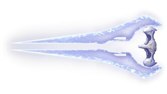
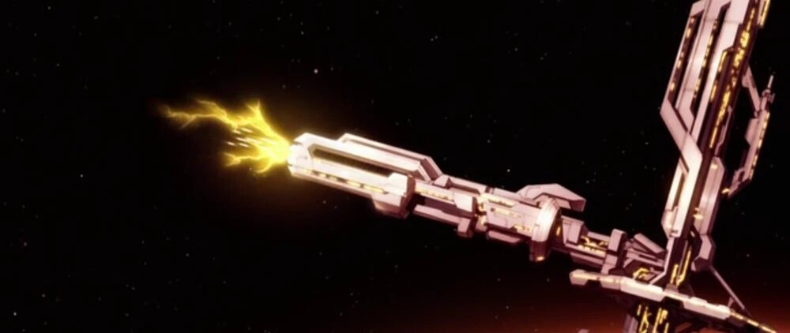

| Apariencia | El diseño del Cañón de Combustible es bastante futurista y alienígena, con una estructura que se asemeja a un lanzador de misiles o a una carga de energía. | |
|---|---|---|
| Propósito | Su función principal es lanzar proyectiles explosivos de combustible altamente reactivo, que causan grandes daños tanto a enemigos como a vehículos. | |
| Mecánica de Disparo | El Cañón de Combustible dispara proyectiles de energía de combustible, que tienen un fuerte poder explosivo. Estos proyectiles son muy destructivos, lo que lo hace ideal para enfrentarse a grupos de enemigos o vehículos blindados. | |
| Capacidad y Recarga | El Cañón de Combustible tiene un cargador limitado con munición de proyectiles explosivos. Aunque su capacidad varía según el juego, típicamente permite disparar entre 10 y 15 proyectiles antes de que sea necesario recargar. | |
| Debilidad | Aunque es un arma poderosa, tiene la desventaja de que sus proyectiles son relativamente lentos en comparación con otras armas más rápidas, como los rifles de asalto. Esto puede hacer que sea más difícil de usar en combates a larga distancia o contra enemigos móviles. |
| Apariencia | La Espada de Energía es un arma cuerpo a cuerpo icónica de los Sangheili (Élite). Tiene un diseño elegante con dos hojas curvas de plasma brillante, generalmente azul, aunque puede variar en color. La empuñadura es metálica y compacta, con un diseño ergonómico para el agarre de los élites. |  |
|---|---|---|
| Propósito | Diseñada para el combate cuerpo a cuerpo, la Espada de Energía es letal en enfrentamientos cercanos. Es usada por los élites y algunos jugadores en multijugador para eliminar enemigos con rapidez y sigilo. | |
| Mecánica de Disparo | No dispara proyectiles, sino que usa una mecánica de "lunging" (embestida), permitiendo que el usuario se impulse rápidamente hacia un enemigo en el rango efectivo para asestar un golpe mortal. Un ataque directo suele ser un asesinato instantáneo. | |
| Capacidad y Recarga | Funciona con una batería de energía que se agota con cada golpe. No puede recargarse, solo reemplazarse por otra espada nueva. Generalmente tiene una capacidad de unos 10-15 ataques letales antes de agotarse. | |
| Debilidad | La Espada de Energía es extremadamente poderosa en combate cuerpo a cuerpo, pero su mayor debilidad es su alcance limitado, lo que la hace prácticamente inútil contra enemigos a distancia. Además, el brillo de su hoja delata fácilmente la posición del portador, lo que puede hacer que sea detectado antes de atacar. También depende de una batería con una cantidad finita de golpes, y una vez agotada, el arma se vuelve completamente inservible. En combate contra enemigos con escudos altos o vehículos blindados, puede ser poco efectiva si el usuario no logra un golpe certero en un punto vulnerable. |
| Apariencia | Las Pistolas Needler son armas de tecnología Covenant con un diseño biomecánico característico. Tienen un cuerpo curvado de color púrpura y detalles en tonos oscuros, con varias agujas rosadas de cristal superdenso sobresaliendo en la parte superior del arma. Estas agujas brillan y se regeneran automáticamente a medida que se disparan. | |
|---|---|---|
| Propósito | Son armas diseñadas para combates a corta y media distancia, especialmente efectivas contra enemigos con escudos bajos o sin protección. Su función principal es disparar agujas teledirigidas que se clavan en el enemigo y, tras un cierto número de impactos, detonan causando una explosión letal. | |
| Mecánica de Disparo | Disparan proyectiles en forma de agujas cristalinas con una leve capacidad de auto-seguimiento, lo que permite que los disparos curven ligeramente hacia los enemigos. Si un objetivo recibe suficientes agujas en rápida sucesión, estas detonan simultáneamente en una explosión devastadora. | |
| Capacidad y Recarga | Cada Needler tiene un cargador que suele contener 30 agujas y su velocidad de recarga es relativamente rápida. No requiere baterías, ya que utiliza proyectiles físicos, lo que permite que la munición sea reemplazada en combate sin restricciones energéticas. | |
| Debilidad | A pesar de su capacidad de rastreo y su letal explosión, las Pistolas Needler tienen dificultades contra enemigos con escudos altos, ya que las agujas pueden no adherirse y rebotar. Además, en espacios abiertos, los proyectiles pueden ser esquivados fácilmente si el enemigo se mueve rápidamente o está demasiado lejos. También tienen una cadencia de disparo moderada y una velocidad de proyectil relativamente lenta en comparación con armas de proyectiles instantáneos, lo que las hace menos efectivas en enfrentamientos a larga distancia. |
| Apariencia | El Aguijoneador Pesado es una versión más grande y letal del clásico Needler. Su diseño mantiene la estética biomecánica del Covenant, con un cuerpo robusto de color púrpura oscuro y múltiples agujas de cristal rosado sobresaliendo de la parte superior. Es más voluminoso que el Needler estándar, lo que le da una apariencia imponente. | |
|---|---|---|
| Propósito | Diseñado para ser un arma pesada de alto poder destructivo, el Aguijoneador Pesado dispara agujas explosivas de mayor tamaño y daño que su versión estándar. Es especialmente efectivo contra enemigos con armadura o grupos de enemigos, ya que sus proyectiles no solo perforan, sino que generan explosiones más potentes. | |
| Mecánica de Disparo | A diferencia del Needler convencional, el Aguijoneador Pesado dispara más lentamente pero con proyectiles más grandes, que tienen una mayor capacidad de rastreo y causan explosiones aún más devastadoras. Su efecto de detonación sigue funcionando cuando suficientes agujas impactan al mismo enemigo, pero cada proyectil por sí solo también causa un daño significativo. | |
| Capacidad y Recarga | Su cargador es más grande que el de un Needler estándar, pero su cadencia de fuego es más baja para equilibrar su poder. Suele contener 20 a 25 agujas, y la recarga es más lenta debido al tamaño y peso del arma. Al igual que otras armas Covenant, utiliza munición de cristal y no puede recargarse con baterías. | |
| Debilidad | A pesar de su alto daño, el Aguijoneador Pesado es menos efectivo contra enemigos que se mueven rápidamente, ya que sus proyectiles tienen una velocidad menor que otras armas pesadas. Además, en combate a larga distancia pierde efectividad, ya que su capacidad de rastreo no es perfecta y los disparos pueden desviarse si el objetivo está demasiado lejos. También es un arma más pesada, lo que puede afectar la movilidad del usuario al usarla en combate intenso. |
| Apariencia | El MA5D es un rifle de asalto estándar utilizado por la UNSC. Su diseño es robusto y futurista, con un cuerpo metálico en tonos grises y negros, acompañado de detalles en amarillo o verde militar. Posee una pantalla digital en el lateral que muestra la cantidad de munición restante, característica clásica de la familia MA5. | |
|---|---|---|
| Propósito | Diseñado como un arma de fuego versátil para infantería, el MA5D se usa principalmente en combates a corta y media distancia. Es ideal para enfrentamientos en los que la rapidez y la precisión moderada son más importantes que la potencia individual de cada disparo. | |
| Mecánica de Disparo | Funciona como un rifle de asalto totalmente automático, disparando proyectiles de alta velocidad a una cadencia constante. Su retroceso es moderado, lo que lo hace adecuado para ráfagas cortas o fuego sostenido en combates cuerpo a cuerpo. | |
| Capacidad y Recarga | Posee un cargador de 36 rondas de munición estándar de 7.62×51 mm y una velocidad de recarga rápida. A diferencia de las armas Covenant, no utiliza baterías ni necesita recargar energía, sino que depende únicamente de la munición disponible. | |
| Debilidad | A pesar de su confiabilidad y versatilidad, el MA5D tiene dificultades en combates de larga distancia debido a su dispersión de balas, lo que reduce la precisión a mayores rangos. Su daño por disparo es relativamente bajo en comparación con armas más especializadas, lo que lo hace menos efectivo contra enemigos con armadura pesada o escudos de alta capacidad. Además, su alta cadencia de disparo puede hacer que se quede sin munición rápidamente si no se usa con control. |
| Apariencia | Este arma Banished tiene un diseño agresivo y pesado, con una estructura metálica oscura, detalles en rojo y una apariencia brutalista típica del armamento de los Desterrados. Posee un cañón grande y recargado de tecnología alienígena, con varias aberturas que expulsan fragmentos explosivos al disparar. | |
|---|---|---|
| Propósito | Diseñado para el combate a corta y media distancia, el Lanzador de Fragmentos dispara proyectiles que se fragmentan en múltiples explosivos secundarios, causando un daño masivo en un área amplia. Es ideal para eliminar grupos de enemigos o para desgastar escudos con rapidez. | |
| Mecánica de Disparo | Dispara proyectiles explosivos que, al impactar, se dividen en fragmentos más pequeños que rebotan y detonan tras un corto tiempo. Esto lo convierte en un arma impredecible y difícil de esquivar en espacios cerrados. | |
| Capacidad y Recarga | Su cargador es limitado, generalmente con 6 a 8 proyectiles antes de necesitar una recarga. El proceso de recarga es más lento en comparación con otras armas Banished, lo que obliga a los jugadores a disparar con precisión y administrar bien la munición. | |
| Debilidad | Aunque su poder destructivo es alto, el Lanzador de Fragmentos sufre en combates a larga distancia, ya que sus proyectiles no tienen un alcance eficiente y su fragmentación puede ser menos efectiva en espacios abiertos. Además, su velocidad de recarga es lenta, lo que deja vulnerable al usuario en momentos críticos. También, si el enemigo se mueve rápido o está en terreno elevado, los fragmentos pueden no alcanzar el objetivo deseado, reduciendo su efectividad. |
| Apariencia | El Cañón de Aceleración Magnética, o MAC, es un arma de gran tamaño utilizada principalmente en naves y estaciones espaciales de la UNSC. Su diseño es imponente, con una estructura alargada y reforzada, compuesta por enormes bobinas electromagnéticas a lo largo del cañón. Su apariencia varía dependiendo de la versión, pero en general, se asemeja a un gigantesco cañón de riel montado en naves o bases terrestres. |  |
|---|---|---|
| Propósito | Diseñado para el combate espacial y el ataque contra objetivos masivos, el MAC es una de las armas más destructivas de la UNSC. Su propósito principal es atravesar el blindaje de naves enemigas con proyectiles cinéticos de alta velocidad, causando daños catastróficos con un solo impacto. | |
| Mecánica de Disparo | Utiliza tecnología electromagnética para acelerar un proyectil de tungsteno u otro material denso a velocidades extremas, impactando con una energía cinética devastadora. A diferencia de los láseres o misiles, el MAC no depende de explosivos, sino de la pura velocidad e impacto del proyectil para destruir su objetivo. | |
| Capacidad y Recarga | La capacidad y velocidad de recarga dependen del tipo de MAC. Las versiones más grandes, como las montadas en estaciones orbitales, pueden tardar varios minutos en recargar, mientras que los modelos más pequeños, como los instalados en naves de guerra, pueden disparar con mayor frecuencia. La recarga involucra la alineación y carga de un nuevo proyectil en la cámara, además de la acumulación de energía en los sistemas de aceleración. | |
| Debilidad | A pesar de su increíble poder destructivo, el MAC tiene limitaciones significativas. Su cadencia de disparo es lenta, lo que lo hace menos efectivo en combates prolongados si el primer disparo no logra destruir al objetivo. También requiere una gran cantidad de energía para disparar, lo que significa que puede sobrecargar los sistemas de la nave o estación si se usa continuamente. Además, debido a que es un arma de trayectoria lineal, los disparos pueden ser esquivados por naves más ágiles o calculados para ser contrarrestados con maniobras evasivas. |
| Apariencia | La M6D es una pistola semiautomática de gran tamaño utilizada por la UNSC. Su diseño es robusto y funcional, con un cuerpo metálico en tonos grises y negros, empuñadura ergonómica y un cañón alargado. Cuenta con una mira telescópica integrada en la parte superior, lo que le permite ser efectiva tanto en combate cercano como a media distancia. | |
|---|---|---|
| Propósito | Diseñada como un arma de respaldo para soldados de la UNSC, la M6D es ideal para combate cuerpo a cuerpo y como opción secundaria en situaciones donde las armas principales no están disponibles. Su gran poder de penetración y precisión la hacen una opción fiable incluso contra enemigos con armadura ligera o escudos débiles. | |
| Mecánica de Disparo | Es una pistola semiautomática que dispara proyectiles de alto calibre (.50 Magnum). Su gran poder de impacto permite eliminar enemigos con pocos disparos, especialmente si se apunta a la cabeza. Además, su mira telescópica proporciona mejor precisión en enfrentamientos a media distancia. | |
| Capacidad y Recarga | La M6D cuenta con un cargador de 12 balas, lo que le da una capacidad decente para un arma secundaria. La recarga es rápida y eficiente, permitiendo al usuario mantenerse en combate sin perder demasiado tiempo. | |
| Debilidad | A pesar de su potencia y precisión, la M6D no es la mejor opción en combates a larga distancia debido a la caída de sus proyectiles y su limitada capacidad de munición en comparación con rifles o armas automáticas. Además, su cadencia de disparo depende de la velocidad del usuario al presionar el gatillo, lo que puede hacer que no sea tan efectiva contra enemigos con fuego automático sostenido. También puede perder efectividad contra oponentes con escudos altos, requiriendo múltiples disparos para romper la defensa antes de causar daño real. |
| Apariencia | El Haz Centinela es un dron flotante de combate de forma esférica, con una estructura metálica de color plateado y detalles azules o rojos según la versión. En el centro, tiene una lente o "ojo" que emite un resplandor y puede proyectar energía. Su diseño es minimalista pero efectivo, adaptado para volar y maniobrar rápidamente en combate. | |
|---|---|---|
| Propósito | El Haz Centinela fue creado como un sistema de defensa automatizado para proteger instalaciones y zonas importantes de los Forerunners, y posteriormente se usó como una herramienta de combate en diversas situaciones. Su función principal es la vigilancia y la eliminación de amenazas, ya sea atacando a enemigos orgánicos o protegiendo áreas clave de las fuerzas invasoras. | |
| Mecánica de Disparo | El Haz Centinela utiliza un rayo de energía concentrada, similar al láser, que dispara de forma continua o en ráfagas rápidas. Este rayo puede causar daños significativos a las unidades biológicas y mecánicas, haciendo que sea un enemigo formidable en combate. También puede maniobrar rápidamente para evitar ser alcanzado mientras ataca. | |
| Capacidad y Recarga | El Haz Centinela tiene una capacidad de energía limitada, lo que significa que después de disparar durante un tiempo, necesita recargarse o alejarse para evitar la sobrecarga. A pesar de esto, su recarga es bastante rápida en comparación con otras armas energéticas, permitiéndole seguir participando en combate sin muchos retrasos. | |
| Debilidad | Aunque los Haz Centinelas son muy efectivos en combate, tienen una resistencia limitada a ataques directos, ya que no poseen una defensa de escudo como otras unidades. Son vulnerables a disparos concentrados, especialmente si se les ataca en grupos o en puntos débiles de su estructura. Además, debido a que dependen de su energía para atacar, se pueden desactivar o neutralizar si se interrumpe su fuente de poder o se agota su munición. También son menos eficientes en combate cercano, donde su habilidad para maniobrar y disparar rápidamente se ve limitada. |
| Apariencia | El Z-250 es un arma de energía compacta, con un diseño futurista y elegante. Posee una estructura metálica en tonos oscuros, con detalles brillantes en azul y verde. La empuñadura es ergonómica, permitiendo un buen agarre para el usuario, mientras que el cañón tiene una forma delgada pero robusta, con una ranura visible que canaliza el rayo de energía. | |
|---|---|---|
| Propósito | Diseñada para desintegrar rápidamente los objetivos con un rayo de energía concentrada, el Z-250 se utiliza principalmente en situaciones de combate de precisión. Es especialmente eficaz contra objetivos con escudos o blindaje pesado, ya que su energía concentrada puede perforar rápidamente las defensas y causar daño significativo. | |
| Mecánica de Disparo | La Z-250 dispara un rayo de energía que se puede dirigir con precisión hacia el objetivo deseado. Este rayo es capaz de atravesar escudos y causar daños sustanciales en unidades blindadas o a gran escala. El arma tiene un sistema de disipación de calor, lo que permite disparos continuos, pero después de varios disparos, necesita un breve tiempo de enfriamiento. | |
| Capacidad y Recarga | El Z-250 utiliza una fuente de energía limitada que le permite realizar una cantidad considerable de disparos antes de necesitar recargarse. La recarga de energía es relativamente rápida, pero no es infinita, por lo que los usuarios deben ser estratégicos con su uso para evitar quedarse sin energía en medio del combate. La capacidad total de disparos antes de recargar depende de la intensidad de uso, pero en condiciones óptimas suele ofrecer entre 10 y 15 disparos de alta energía antes de necesitar un descanso. | |
| Debilidad | Aunque es muy poderosa contra enemigos con escudos o blindaje, la Z-250 tiene una cadencia de disparo lenta y no es eficaz a largas distancias debido a su enfoque de precisión y energía dirigida. Además, su limitado suministro de energía y la necesidad de enfriamiento entre disparos rápidos la hacen vulnerable si no se usa con cuidado. En combates prolongados, puede dejar al usuario expuesto si no gestiona bien la recarga. También tiene una baja capacidad de munición en comparación con otras armas, lo que requiere recargas frecuentes en situaciones de alta intensidad. |